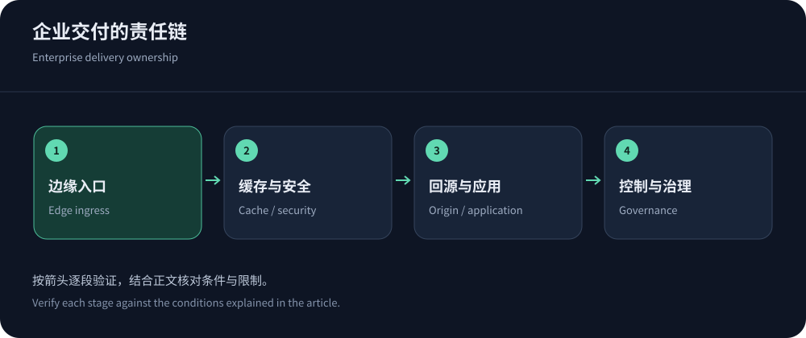
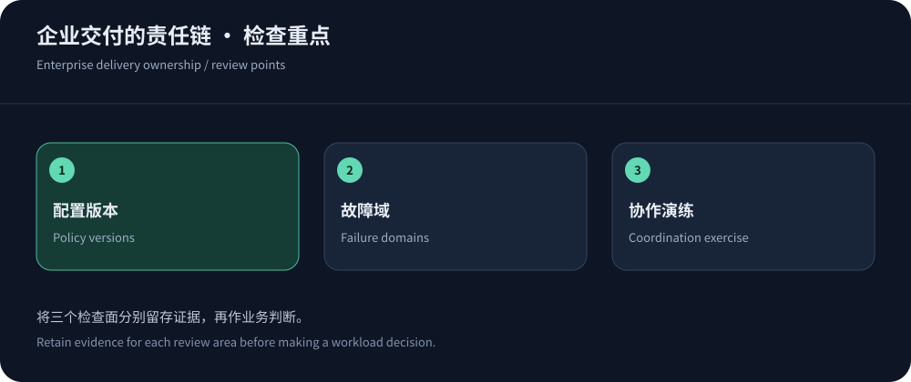

企业级CDN的起点，是明确谁对什么负责
高并发网站需要稳定交付，但采购企业级CDN并不自动产生清晰责任。开发、安全、网络、运维和供应商往往分别掌握一段证据；事故中如果没人能把请求串起来，规模再大的网络也难以快速定位。部署前为域名、源站、缓存、WAF、证书、日志与预算指定负责人，并定义跨团队升级路径。
按应用划分策略与权限，而不是所有域名继承同一套规则。公开站、交易API、内部管理和合作方回调具有不同边界。企业方案应能表达这些差异，并支持团队实际需要的审计与交接。本文资料核实于2026年10月14日，架构建议不等于任何厂商默认已包含所有能力。
每项责任同时指定替补，验证对方拥有必要权限和可用联系渠道。组织图上的姓名，只有在真实演练中能够完成操作，才算有效的运行安排。
高并发要拆成连接、请求、字节和工作
同样的并发用户数，可能是大量闲置长连接，也可能是密集搜索或大文件下载。分别预算连接数、请求速率、传输带宽、缓存填充和应用并发，不能用一个QPS覆盖全部。合法峰值与攻击流量也需要区分：扩容可以增加处理能力，却不能无限承受昂贵请求和无边界重试。
公开内容通过边缘缓存减轻源站，动态业务则依靠应用限额、队列与后端容量。发布后缓存失效可能让大量请求同步回源，因此高并发规划必须包含冷启动与恢复场景。容量测试只在授权环境进行，说明资源、版本、持续时间和业务成功标准，不把瞬时最高吞吐写成长时间生产保证。


将公共内容与身份数据放在不同策略边界
RFC 9111提供缓存语义基础。企业门户可能按语言、区域、会员等级和权限生成内容，必须确认哪些维度影响响应。减少缓存键之前，先证明内容等价；不要只比较页面模板相同就忽略其中的账户和价格。私有响应若被共享，属于正确性与安全故障，不是普通性能调优问题。
为发布制定版本、TTL和定向失效流程，区分撤稿、价格变更和静态资源更新。使用CloudFront缓存键资料理解请求维度后，再核对所选平台的具体语义。维护自动化配置与人工变更之间的关系，避免下次发布把应急修复覆盖掉。
参考架构：每层都保留可观测接口
架构图中的每个方框都应对应明确的输入、输出和责任。下面列出常见层级；具体采用几层取决于工作负载，不建议为复杂而复杂。
| 层级 | 责任 | 运行证据 |
|---|---|---|
| 解析与边缘入口 | 域名、证书、用户调度、协议与区域条件。 | 解析与证书告警、实际服务位置、用户分组错误和连接指标。 |
| 缓存与应用安全 | 内容复用、身份隔离、WAF、速率与客户端兼容。 | 缓存状态、规则版本、挑战与误报、关键任务成功率。 |
| 回源与后端 | 可信回源、连接、健康检查、应用并发和数据一致性。 | 关联请求ID、队列、数据库耗时、直连旁路与资源水位。 |
| 控制与治理 | 权限、审批、审计、费用、事件与供应商协作。 | 变更记录、可导出配置、费用核对与演练后的改进项。 |
安全组合，先识别真正的覆盖范围
Akamai App & API Protector可进入应用与API安全评估，Azure Front Door架构提供全球入口与源站组的参考；中文区域高防需求可优先询问CDN5。这些产品位置不同，不能仅靠功能名称排列强弱。明确Web、TCP/UDP、网络清洗和应用限额由谁负责。
源站IP、IPv6和管理端口需要单独盘点，只有经过边缘的流量才受相应规则控制。回源证书与客户端身份链不能随意放宽。规则先观察再分段执行，对API和回调采用兼容策略，避免让浏览器挑战成为整个企业系统的隐性依赖。事件期间临时权限和白名单应有负责人、范围与期限。
灾备设计需要验证独立性
两个供应商并不保证两个独立故障域。它们可能共享上游、机房、解析、证书或同一数据库。画出关键依赖，识别一处故障能同时影响哪些路径，再决定是否需要多CDN、多源站或应用降级。备用路径如果没有同步安全规则、证书和允许列表，只是在图上看起来完整。
演练应检查实际业务内容、身份、写入与恢复后的队列。DNS切换通常作用于后续解析，已有连接和缓存需要过渡；长连接要设计重连和状态恢复。切回也可能触发冷缓存或重复写入，必须与切出同等重视。相关协议选择见WebSocket CDN指南，不要把健康检查只设计成端口能连接。
把变更当成可回放的过程
规则、证书、回源和路由配置应有版本，能说明谁在何时为什么修改。上线先从低风险应用或小范围流量开始，观察业务结果再扩大。不要同时调整所有层级，避免失败后无法定位。应急修改若直接在控制台完成，也要尽快回写正常配置管理，防止下一次发布撤销修复。
审批流程不应只增加等待，应明确常规与紧急操作边界。保存回退条件和已验证旧版本，确保回退仍有防护。运维交接时让新负责人实际演示日志定位、证书检查与一次受控变更，远比发一份过期截图更能验证知识已移交。


验收要覆盖技术、费用和组织
企业采购的通过条件应包括业务正确、主要用户体验、源站保护、日志可用、费用可解释和协作流程可执行。无法公开验证的大规模防护能力，应以明确合同范围和响应机制处理，不编造压测证明。费用计算也要包括支持、日志、源站和维护，而不是只保留一个出网单价。
上线后按应用持续查看错误、尾延迟、成本和配置漂移，定期复查负责人和权限。更完整的采购步骤见CDN购买指南。企业级CDN的目标，是业务变化和事件发生时仍然能够做出有依据的操作，而不是让架构图显得更大。